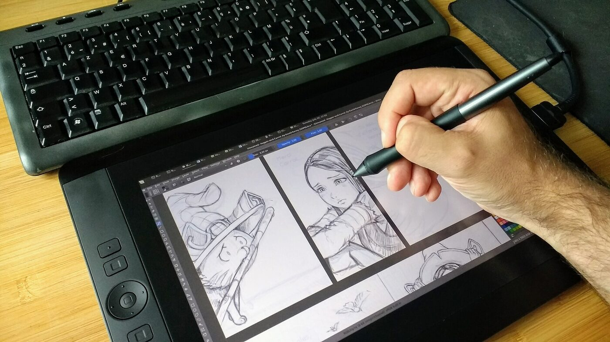
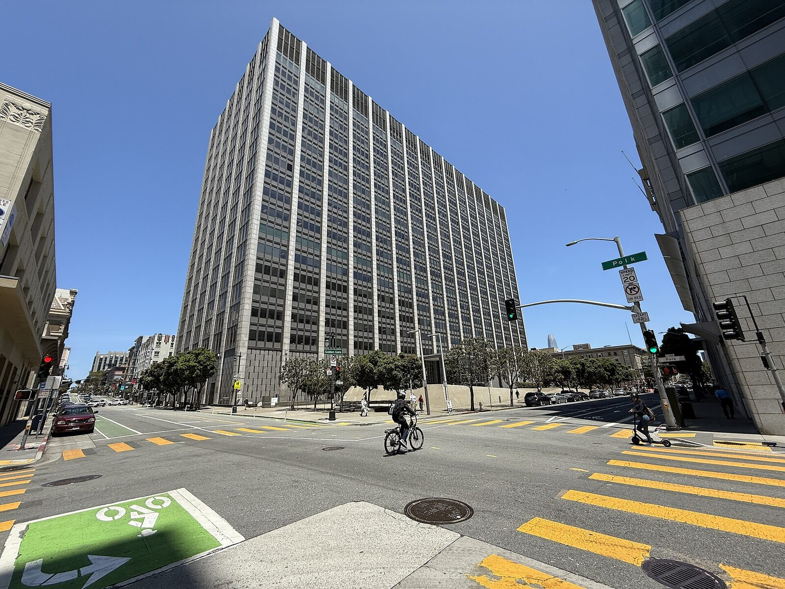
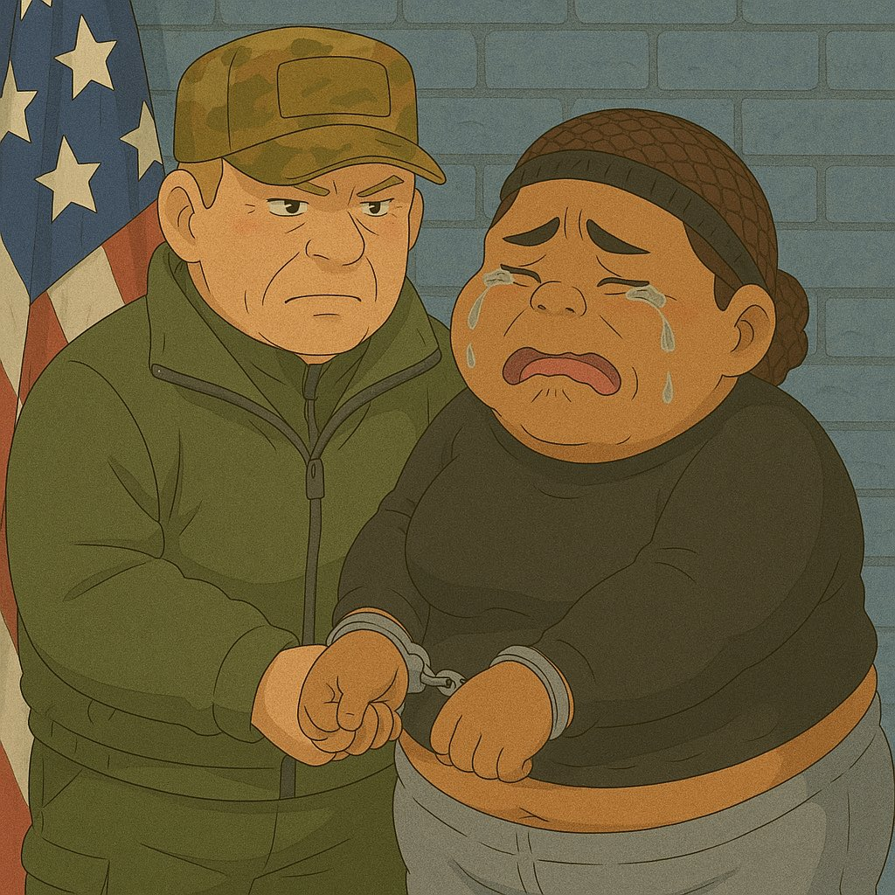
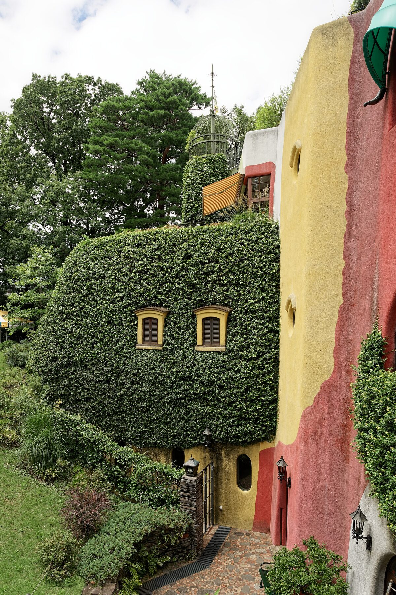
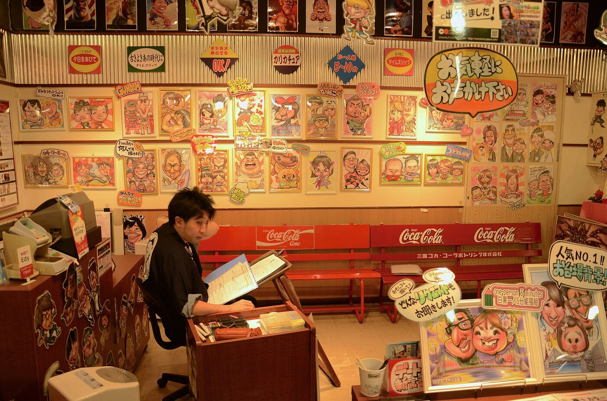

「這張很 AI 欸。」
看起來像 ≠ 被拿去訓練
（假設情境）

草稿、線稿 = 你的創作紀錄
照片：David Revoy（2017），CC BY 4.0，Wikimedia Commons；已縮小。與本頁任何案件無關。影片打不開？到 YouTube 看 ▶ 看完先問：這是證據，還是主張？
16 批書
經台灣出港
來源：媒體依貨運資料報導，不是法院認定
有線索 ≠ 有證明

照片：Phillip Burton Federal Building & U.S. Courthouse，舊金山（2025），Marincyclist，CC BY-SA 4.0，Wikimedia Commons；已縮小。2025/6/23 裁定的 Alsup 法官在這棟大樓的舊金山院區審理本案。2025/6/23 美國個案裁定，不是台灣法律。另：2026/7/20 法院批准 15 億美元和解（482,460 部作品）；和解 ≠ 侵權認定。

圖：The White House / GPT-4o，白宮 X 原貼文（2025/3/27）；Commons 標示為公有領域，Wikimedia Commons。新聞：AP 2025/3/27。這不是吉卜力工作室的作品。畫風像吉卜力
但吉卜力沒畫、也沒同意
畫的是一名真實被捕的女性。AP 報導，藝術家 Karla Ortiz 對此很憤怒。

三鷹之森吉卜力美術館（2024），Jakub Hałun，CC BY 4.0，Wikimedia Commons；已縮小。
這就是「似顏繪」
照片：Stephen Kelly，台場似顏繪店（2013），CC BY 2.0，Wikimedia Commons；已縮小。不是事件現場或當事畫家。付錢買畫 = 可以改作、公開比較嗎？
政府主權 AI 語料庫
7,161 筆中，111 筆來自民間
授權要免費、付費，還是作者決定？
今周刊 2026/10/14 報導；與 563 噸不是同一批資料。
每題請一位同學回答「是／否」，再說一句理由。點按鈕記票。
用 AI 把自己的照片轉成吉卜力風，發 IG，OK？
用別人的畫風畫真實新聞人物，OK？
付錢買了似顏繪，就可以拿去跟 AI 比、公開投票？
你的社團海報被拿去訓練 AI，要先問過你？
AI 公司用合法買的書訓練，還該付錢給作者？
這三件事，正是著作權和授權在處理的事。
全班舉手，老師按「是／否」加一票，也可以直接改數字。
電視台的新聞畫面被拿去訓練 AI，應該付錢？
用主播的聲音做 AI 播報，要先問過他？
用吉卜力風畫新聞人物，電視台可以播？
AI 自動剪節目精華上傳 YouTube，OK？
新聞用了 AI 畫面，一定要標示？
用 AI 生成「很像迪士尼角色」的圖放進畢製，OK？
演員的臉和聲音做成 AI 分身，每次都要本人同意？
用 AI 寫劇本初稿，片尾要標示？
用 AI 影片工具生成的片段，算你的作品？
影展應該接受 AI 生成短片參賽？
韓國《中央日報》依 ImportKey／Panjiva 貨運資料，整理出 563.143 公噸、16 批，經台北／高雄／基隆出港。法院附件的會議紀錄提到 UDC 為「第四筆訂單」，合約仍待內部簽核。法院文件描述了 Anthropic 的 Project Panama。目前沒有公開資料逐批證明這些貨物由 Anthropic 買下、掃描，並用於 Claude 訓練。「為躲避美中緊張而繞道台灣」、「換成台灣買回 AI 服務」等說法也未證實。
UDC：台灣圖書通路商。Better World Books：貨運報導中出現的公司。Project Panama：法院文件描述的購書／數位化計畫。Claude：Anthropic 的模型服務。
「563 噸書全進 Claude？有貨運報導，也有法院文件記下供書洽談；但兩邊還沒逐批對上。先把線索和證明分開。」
1.6% 只代表該資料庫當時的筆數比例。受訪者稱主流 LLM 繁中語料不到 1%，是估計，報導未交代統計方法。
第 10 頁：左鍵點「是／否」加一票，右鍵減一票；重新整理頁面會歸零。
上方切換「電視系／電影系」題組。全班舉手後，老師按「是／否」加一票（右鍵減一票），也可以直接改數字；比例條會自動更新。「歸零」只清目前這組。重新整理頁面會全部歸零。
圖中是真實被捕的女性（Virginia Basora-Gonzalez）。課堂討論請聚焦「畫風、同意、用途」，避免評論她本人。
YouTube 與 Instagram 影片需要連網。直接雙擊本機 HTML 開啟時，YouTube 可能顯示播放錯誤；請改按頁面上的按鈕開原站，或把資料夾放到網頁伺服器上播放。